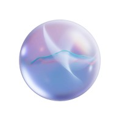
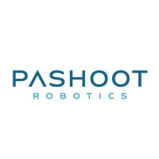
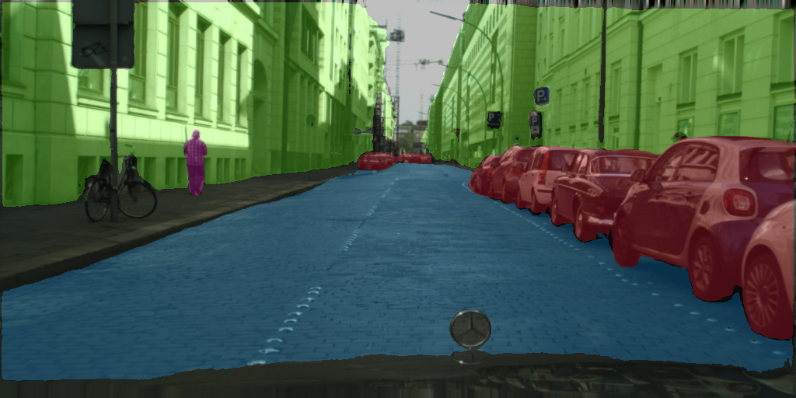
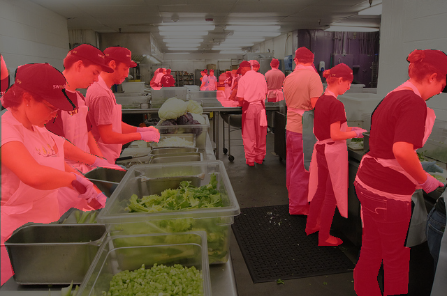
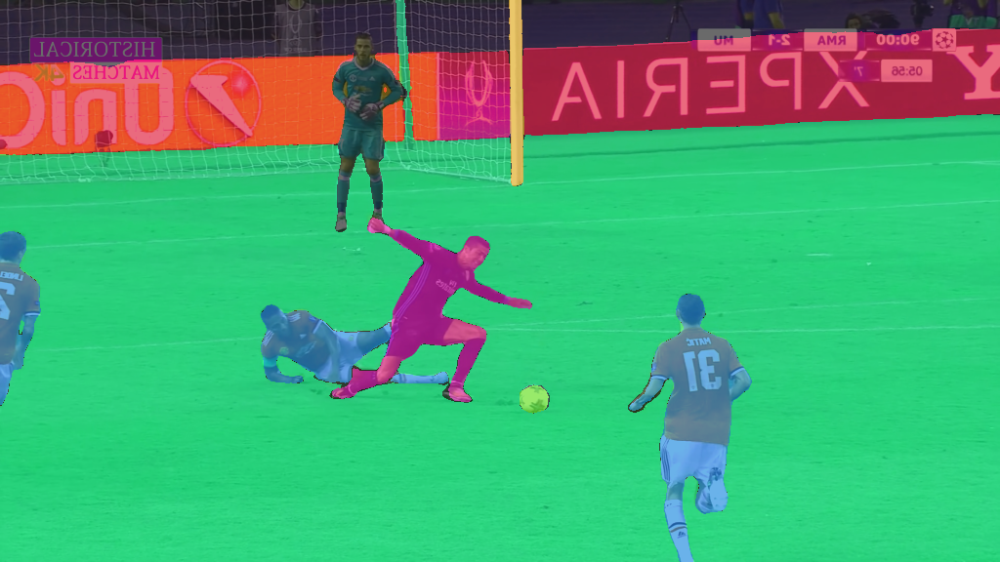

Experience

NLPearl
Deep Learning Research Engineer
Jul 2024 - Present
- Developed real-time systems to detect conversational pauses and suggest optimal starter sentences for AI agents using fine-tuned LLMs, with specialized prediction heads.
- Experimented with various architectures, including encoder-based and decoder-pretrained models, applying LoRA and multi-stage training to enhance prediction accuracy.
- Designed a small language model (SLM) to generate task-specific tokens, enabling multi-task outputs from a single fine-tuned model for efficient real-time inference.
- Design solutions using pre-trained SOTA audio tokenization models and large language models (LLMs) tailored for audio-specific objectives.

Pashoot Robotics
Computer Vision and Deep Learning Research Engineer
May 2023 - Jul 2024
As a pivotal member of the Algorithms team at Pashoot Robotics, my role focused on enhancing and innovating vision solutions critical to manufacturing automation. I applied deep learning methods to practical applications, including research in 3D reconstruction, object detection, segmentation (few-shot, zero-shot), tracking, 6DOF estimation, and simulation expertise (specifically using Blender).
Projects
PopYou2 - VAR Text GitHub Hugging Face🤗 wandb
- Generated a comprehensive dataset of approximately 100,000 Funko Pop! images with detailed prompts using SDXL Turbo for high-quality data creation.
- Fine-tuned the Visual AutoRegressive (VAR) model, pretrained on ImageNet, to adapt it for Funko Pop! generation by injecting a custom embedding representing the "doll" class.
- Trained an adapter with the frozen SigLIP image encoder and a lightweight LoRA module to map image embeddings to text representation in a large language model.
- Enabled text-to-image generation by replacing the SigLIP image encoder with its text encoder, retaining frozen components such as the VAE and generator for efficiency and quality.

Few-Shot Segmentation with SAM and LoRA GitHub
- Employs LoRA to adapt SAM for few-shot segmentation with minimal images.
- Eliminates reliance on external prompts or detection models like Grounding SAM or YOLO.
- Outperforms prior methods (e.g., PerSAM) in class-specific segmentation quality and flexibility.
- Trained on diverse datasets, including COCO, Soccer, and Cityscapes, with varying sample sizes and class distributions.
- Explored methods to enhance the approach by leveraging other foundation models with prior class-oriented knowledge (e.g., CLIP, SigLIP).



CelebrityLook GitHub
- Developed a mobile app for real-time face transformation.
- Utilized advanced GAN technologies on-device.
- Achieved 30fps on mobile devices with optimized CoreML models.
- Won the MobileXGenAI hackathon hosted by Samsung Next.
- Combined multiple losses from foundation models and facial feature extractors to ensure high-quality transformations.
- Implemented the paper "Bridging CLIP and StyleGAN through Latent Alignment for Image Editing" Conducted research to enhance the approach by experimenting with different loss functions, latent spaces, and mapper architectures, leveraging a custom StyleGAN variant. Additionally, explored the method’s limitations and stability, introducing a fine-tuning process to improve model robustness and performance.

PopYou - fastgan clip GitHub
- Utilized an image upscaling model and Deci Diffusion to create a semi-synthetic dataset of Funko Pop figures.
- Trained a GAN model on the dataset using FastGAN to generate high-quality Funko Pop designs.
- Developed an inversion model based on a frozen CLIP backbone, enabling image generation from both text and real-life images, leveraging techniques from the CelebrityLook project.
- Explored 3D generation of Funko Pop figures, including mesh creation and multi-view rendering, using cutting-edge diffusion models and textual inversion.
- Benchmarked the PopYou! model against Deci Diffusion, evaluating performance through CLIP similarity and FID scores.


KoalaReadingAI GitHub Spotify YouTube
- Founded an AI podcast that automatically summarizes the latest AI research papers.
- Utilizes ElevenLabs text-to-speech and ChatPDF APIs for summarization and speech synthesis.
- Automated downloading of latest papers from Hugging Face daily papers.
- Implemented free TTS option using Tortoise-TTS; working on summaries using Llama 2.